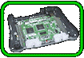

|  |
|
NINTENDO64には、メインのCPUのほかにも、グラフィクス処理専用、コントローラ処理専用といったCPUが用意されているんです。それぞれが得意な処理を、同時に並列に行なう
ことができるため、効率がいいんです。
なかでもスゴいのが、グラフィクスエンジンの“RSP”。なんと、16ビット×８の同時演算が可能な128ビットプロセッサなんですよ。複数の命令の組み合わせによっては、32 ビット演算もできるスゴいヤツです。 このマルチプロセッサと、メモリの働きによって、『ウェーブレース64』の波のような映像表現が実現できました。コレからも、ゲームクリエイターのがんばり次第で、もっと スゴいことが見られることと思います。 また、“Ｚバッファリング”機能や、“パース補正”機能も搭載されています。これは、画像をごくごく普通に見せるために用いられるものです。 たとえば、『スーパーマリオ64』で、マリオが池のなかを走るシーン。パシャパシャ跳ねる水や、揺れ動く水がごく普通に描かれています。ところが、もし“Ｚバッファリング 機能”を搭載していないマシンでコレをやると、ポリゴンが表示される順番がバラバラになってしまい、跳ねた水の一部が抜けていたり、揺れ動く水が不自然だったりするのです。 “当たり前”の画像を実現するために、実はスゴい技術が使われているってワケです。まさに、気付かれない、さりげないこだわりってヤツですね。 |
| シーク時間ゼロを実現のページへ |
 |